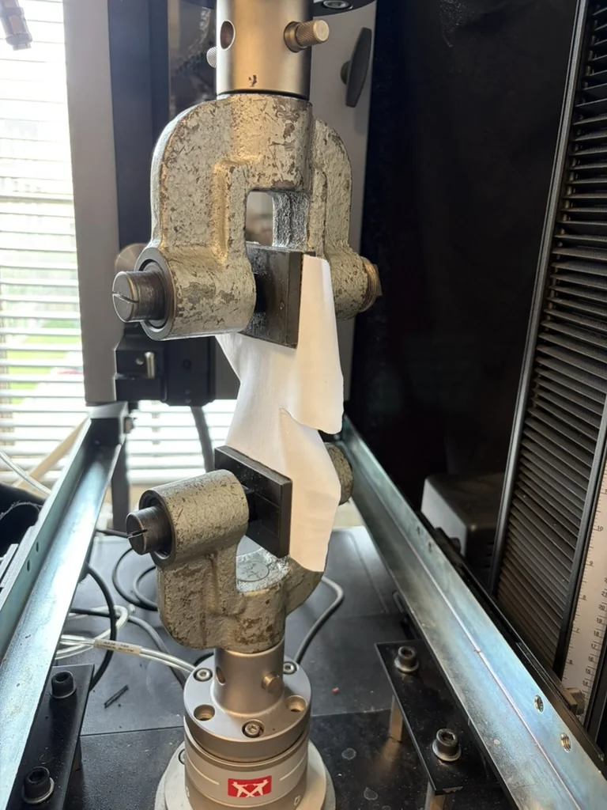
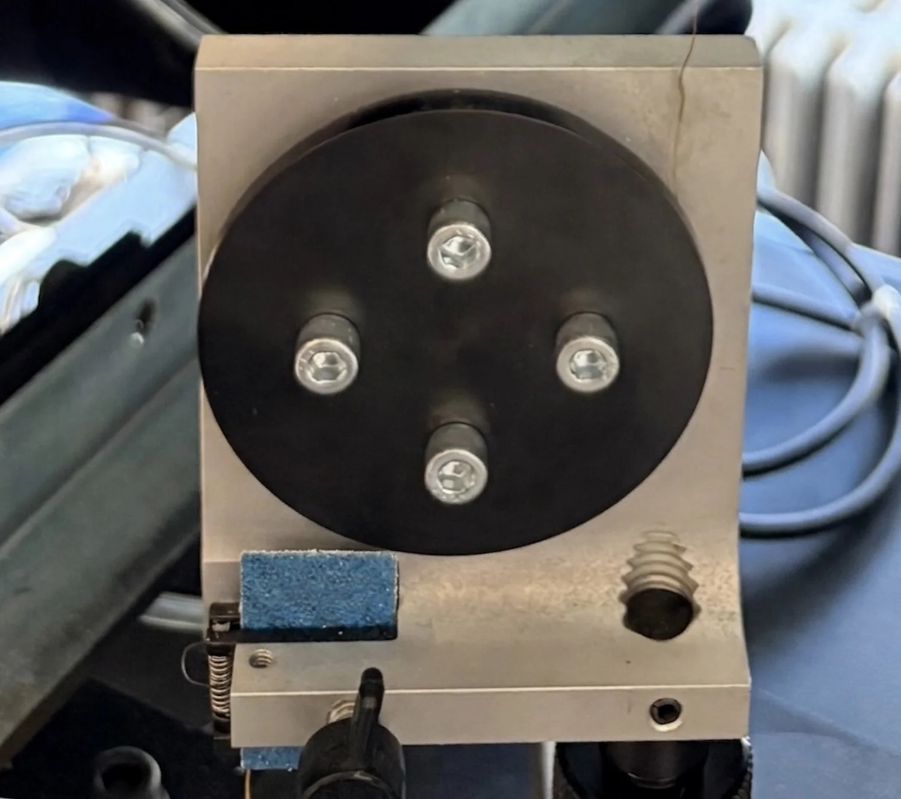
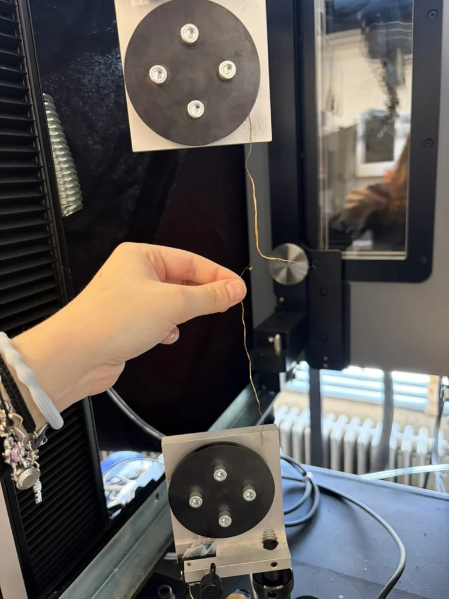
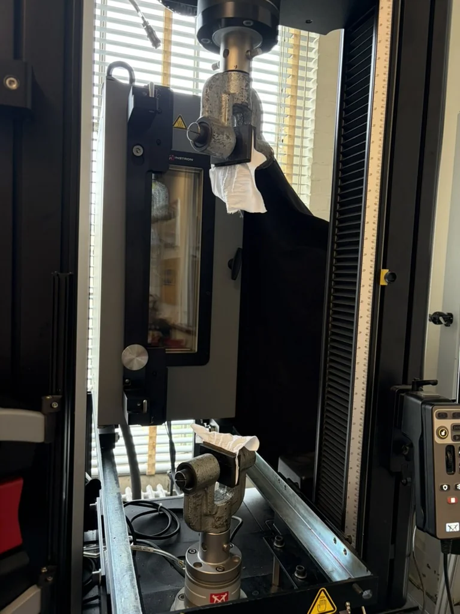
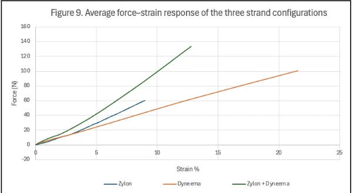

Making high-performance fiber testing more reliable
Developing specimen grips and preparation methods that reduced unusable tensile trials while investigating high-performance fiber combinations.

Instron tensile testing setup holding a textile specimen · Click image to enlarge
The experimental problem
I tested high-performance fibers and textile composites, but the original test setup produced too many invalid trials. Approximately half of our specimens slipped from the grips or failed outside the intended gauge section, making it difficult to interpret material performance.
What I changed
I experimented with specimen preparation and gripping methods, including changes intended to transfer the load more consistently into the test section. I documented the successful procedures and recommendations in an internal methods manuscript so future testing could begin from a more reliable setup.
Results
With the improved methods, the rate of slipping or off-gauge failures fell from approximately 50% to around 10%. The material comparison itself did not support our initial hypothesis: a twisted combination of the tested fiber types was not stronger per unit mass than the individual constituents. Both outcomes were useful. One improved the quality of our measurements; the other answered the original materials question.
What I learned
This project taught me that test-fixture design and specimen preparation are part of the experiment, not just setup tasks. Good measurements depend on understanding how and where a specimen is being loaded.
Project imagery



